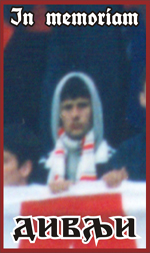
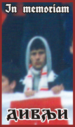

NAVIJAČI
Firma
FIRMA je organizovana grupa , koja u svoje redove prima samo istinski prave navijače Vojvodine , koji će svoju ljubav i odanost iskazati bodrenjem kluba u gostima i kod kuće.Firma je jedna od najmodernijih i najaktivnijih grupa na ovim prostorima u stalnom usponu i sa značajnom ulogom u životu kluba kroz učešće svojih članova u radu Skupštine kluba.
Kroz godine svoga postojanja FIRMA je od male grupe mladih ljudi koja se odlučila za svoj samostalni put odvajajući se od RED FIRM-a postala respektabilna navijačka grupa sa preko 2000 aktivnih članova .Iz godine u godinu sa mnogo ljubavi, novih ideja, duhovitih koreografija pa i humanitarnih akcija ona okuplja i animira mladu novosadsku populaciju u cilju omasovljenja, neguje ljubav prema svom gradu, patriotizam i stil života karakterističan novom vremenu.Da je, bez ikakve sumnje, postigla jedan od ciljeva za koji se zalaže, a to je omasovljenje navijačkog korpusa FK “Vojvodine”, govori podatak o prisustvu 7000 Novosađana na utakmici Finala kupa 11. 05. 2011.
STARA GARDA “SLANINARI ISTOK”
STARA GARDA osnovana je jednog letnjeg dana 1994. na novosadskom “Štrandu” kada je grupa starijih navijača Vojvodine, poznatijih pod nadimkom “slaninari” odlučila da formira svoju organizovanu navijačku grupu. Rečeno-učinjeno.Uprkos problemima koji su se pojavili već istog dana kada su simpatizeri Voše na Štrandu skupljali dobrovoljne priloge kako bi finansirali izradu prve zastave STARE GARDE (kruže priče da je zastava od planiranih 20 metara dužine morala da se skrati na polovinu te mere jer su GARDISTI popili 10 metara iste…), grupa je osnovana i egzistira već skoro dve decenije.
Nalaze se na sredini istočne tribine stadiona “Karađorđe”, a zaštitni znak im je sat na Petrovaradinskoj tvrđavi i krigla piva.Grupu čini 60-tak članova, od radnika do intelektualaca. Političko opredeljenje STARE GARDE je FK “Vojvodina”.Vođa grupe je legendarni Miloš Zemljanac, popularni Fale, čovek koji je svojevremeno izvadio zdrav zub (morao je s razlogom da izađe s posla) da bi prisustvovao jednoj utakmici Vojvodine.
Red Firm
U sezoni 1988/89 javlja se po prvi put ideja o velikoj , jedinstvenoj grupi koja bi obuhvatila sve male koje su do tada postojale .Ova ideja se ostvaruje na proleće 12.03.1989.godine uoči utakmice VOJVODINA-DINAMO / ZAGREB /kada je većina navijačkih grupa na svojoj Skupštini odlučila da oformi RED FIRM .Tada se na stadionu po prvi put pojavljuje transparent RED FIRM .Ime kao i svi navijački simboli su postali opšteprihvaćeni kod svih navijača Vojvodine.
Ime grupe osmislio je Duško Šimunovački- Šima , po uzoru na navijače londonskog WEST HAM UNITEDA , koji sebe nazivaju INTER CITY FIRMS s tim što je INTER CITY zamenjeno sa RED , zbog Vošine crvene boje.U vremenima koja su dolazila , raspadom bivše države ,NATO agresijom i sveopštim teškim ekonomskim uslovima na tribinama našeg stadiona iz RED FIRM-a su izrasle još dve navijačke grupe STARA GARDA i FIRMA koju su osnovali mahom mlađi momci, tako da sada sa ponosom možemo reći da je RED FIRM nukleus organizovanih navijačkih grupa u Novom Sadu.
 
